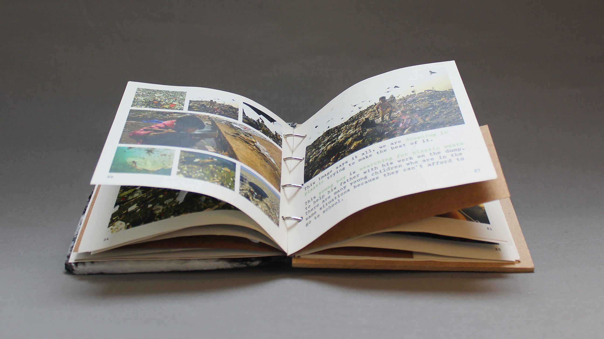
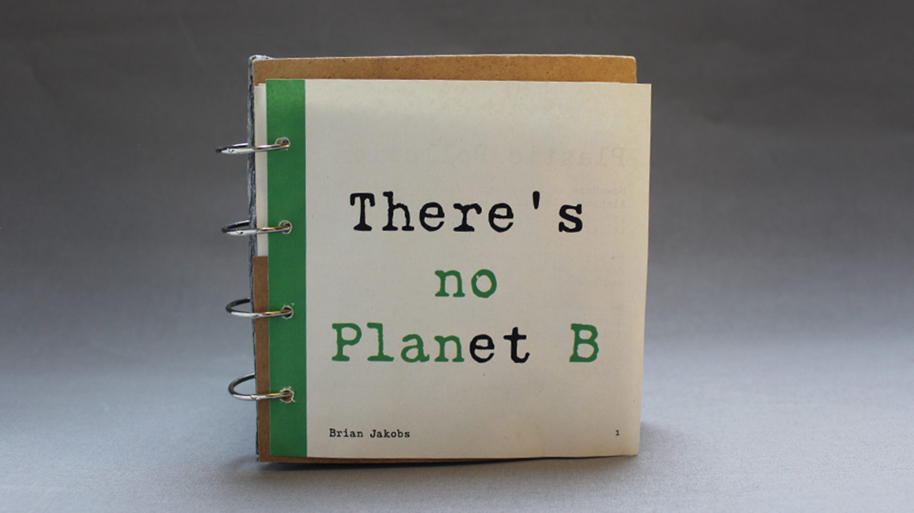
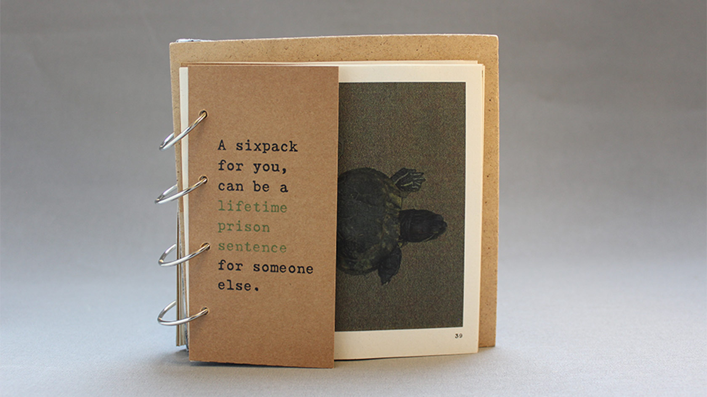
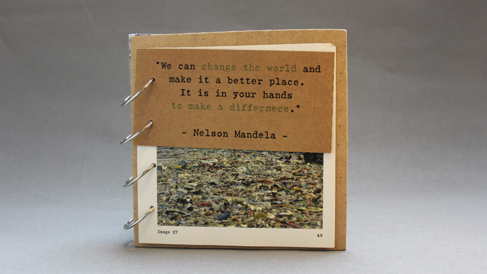
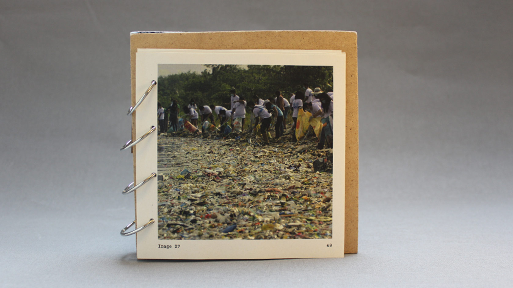
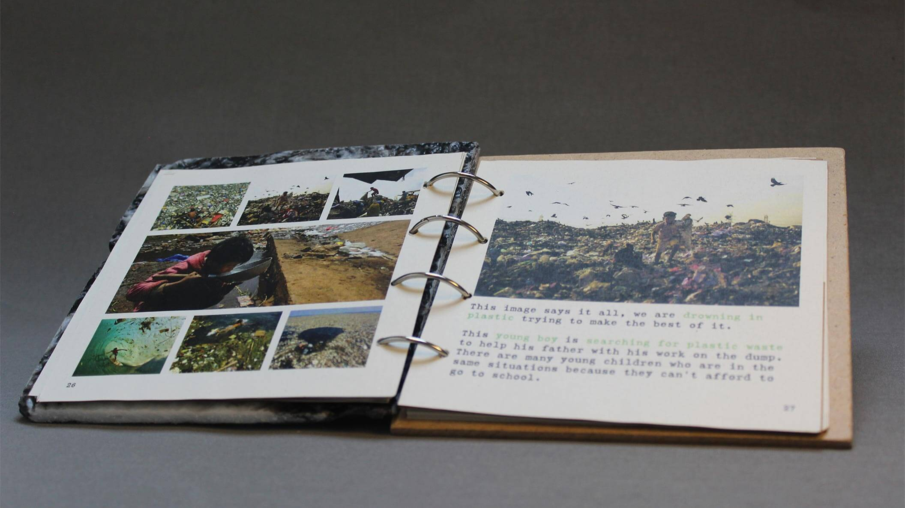
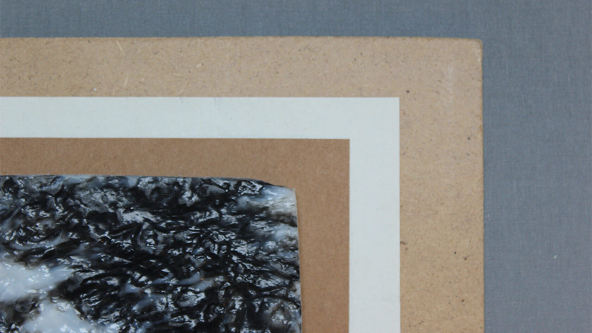
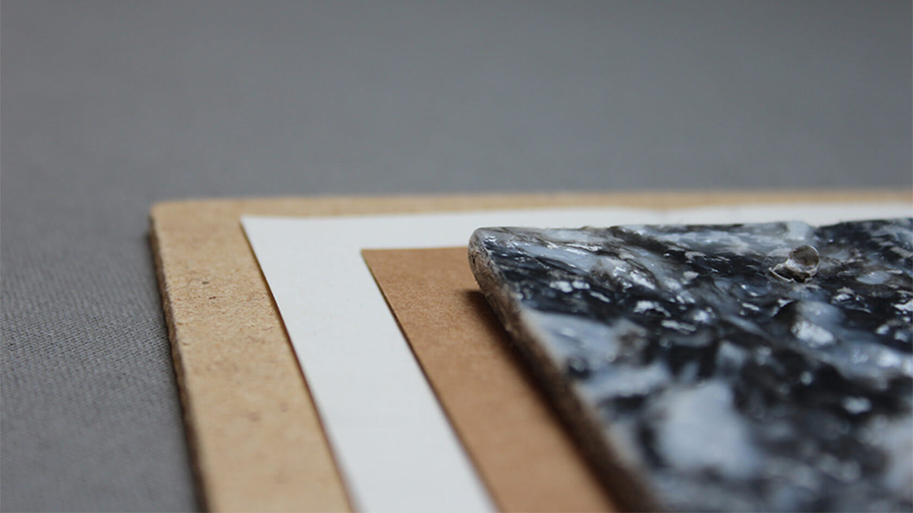
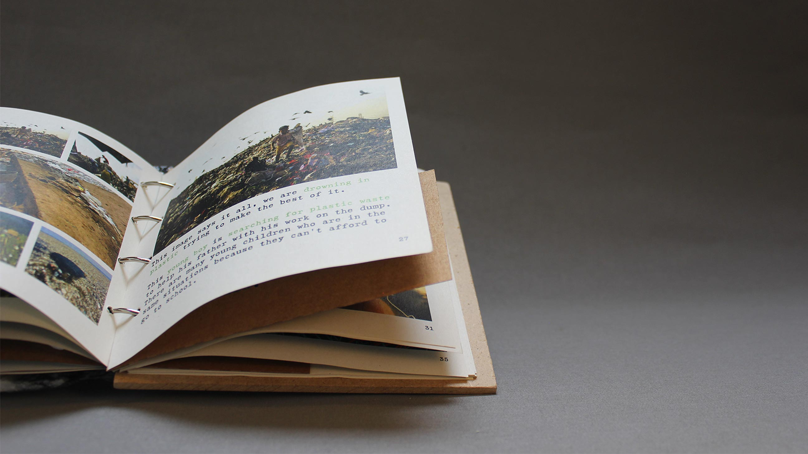

Case study
There's no plan B

About the project
A different view
In a digital age, real world consequences can often feel far away or not as impactful as they would have been if you were to see them with your own eyes. So I set out to make the consequences of (plastic) pollution feel more ‘real’.

The Challenges
Too much content
The main goal of this project was to show readers the effects of plastic pollution through a series of pictures. I wanted to make the beautiful photos feel tangible so I decided to make a physical booklet made out of recycled materials.
One of the hardest thing about this project was thinking of a way to make the reader really think about the effects of plastic pollution. I wanted to almost force the reader to stop and realize that what they are seeing is not normal.




The process
Hidden in plain sight
After choosing out the photos and deciding on the narrative I wanted to tell, I started to plan out how I would actually made the booklet. I wanted to print on recycled paper and make the cover myself, fully out of recycled plastic.
By covering the polluted or effected areas of a photo before the reader would see them fully, I specifically made them stop and realise how wrong the photo is. This way I could really push my narrative and message.

The results
Introduction through games
In the end I created a beautiful booklet showing the real consequences of plastic pollution, both to humans, animals and nature. By applying the principle of Pathos I tried to connect with the readers through emotions and feelings.
Because of the natural and recycled materials I used, the message got even stronger and tied the whole concept together. This is one of the few times I made something physical instead of digital, making this a very special project to me.


The materials I used included plastic (recycled by myself), recycled paper, MDF wood and metal rings.

Bekijk ook
Meer projecten
From Irak to Holland
Next project